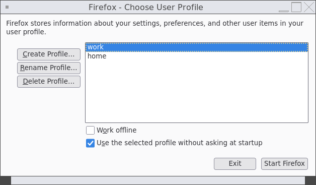

How I use Firefox profiles in 2026
2026/07/02After 15 years of using Firefox on Linux I finally got to a point where I separated my personal browsing from my work.
For a long time all my extensions, bookmarks and browsing history lived in a single browser. At some point I got tired of seeing work-related links and bookmarks every time I open a new tab during out-of-office hours.
Profile support has been in Firefox since, ehh, forever. But considering the lack of a shiny user-friendly interface, it's still considered beta, I guess?
If you run Firefox as firefox -P, you will be greeted with a profile selector:

Choosing a profile will start a browser with the bookmarks, extensions and history entries that are stored for that profile. Your start page will have all the relevant links. Your settings will be set accordingly.
Isn't it neat?
Not really.
Firefox doesn't track which of the profiles it currently uses. For example, I started a browser with the work profile. Clicking links in other applications or opening PDFs will behave inconsistently: Firefox may decide to open a new browser window with my home profile.
It's really annoying: it takes more time to start a new app instance, and I may end up in the browser where I'm logged out of the service I'm accessing.
That's how I solved it
First, I created desktop entries in ~/.local/share/applications for each of the profiles I use.
The profile is specified via -P {profile name} parameter.
Entry for the home profile: (~/.local/share/applications/firefox-home.desktop):
[Desktop Entry]
Version=1.0
Type=Application
Exec=firefox -P home %u
Terminal=false
X-MultipleArgs=false
Icon=firefox
StartupWMClass=firefox
Categories=GNOME;GTK;Network;WebBrowser;
MimeType=application/json;application/pdf;application/rdf+xml;application/rss+xml;application/x-xpinstall;application/xhtml+xml;application/xml;audio/flac;audio/ogg;audio/webm;image/avif;image/gif;image/jpeg;image/png;image/svg+xml;image/webp;text/html;text/xml;video/ogg;video/webm;x-scheme-handler/chrome;x-scheme-handler/http;x-scheme-handler/https;x-scheme-handler/mailto;
StartupNotify=true
Name=Firefox (Home)
Entry for the work profile (~/.local/share/applications/firefox-work.desktop):
[Desktop Entry]
Version=1.0
Type=Application
Exec=firefox -P work %u
Terminal=false
X-MultipleArgs=false
Icon=firefox
StartupWMClass=firefox
Categories=GNOME;GTK;Network;WebBrowser;
MimeType=application/json;application/pdf;application/rdf+xml;application/rss+xml;application/x-xpinstall;application/xhtml+xml;application/xml;audio/flac;audio/ogg;audio/webm;image/avif;image/gif;image/jpeg;image/png;image/svg+xml;image/webp;text/html;text/xml;video/ogg;video/webm;x-scheme-handler/chrome;x-scheme-handler/http;x-scheme-handler/https;x-scheme-handler/mailto;
StartupNotify=true
Name=Firefox (Work)
And then I have the following snippet of code in my system's startup script:
if [ $(date +%u) -lt 6 -a $(date +%H) -lt 16 ]; then
xdg-mime default firefox-work.desktop x-scheme-handler/https
xdg-mime default firefox-work.desktop x-scheme-handler/http
xdg-mime default firefox-work.desktop x-scheme-handler/chrome
xdg-mime default firefox-work.desktop application/pdf
firefox -P work &
else
xdg-mime default firefox-home.desktop x-scheme-handler/https
xdg-mime default firefox-home.desktop x-scheme-handler/http
xdg-mime default firefox-home.desktop x-scheme-handler/chrome
xdg-mime default firefox-home.desktop application/pdf
firefox -P home &
fi
During office hours (Mon-Fri, before 16:00) it assigns the firefox-work app to handle all link-related stuff and sets it as a default PDF reader app.
Otherwise, firefox-home is used.
Not sure if this is the best way to do it, but it's a setup I've been happy with for the past 6 months.